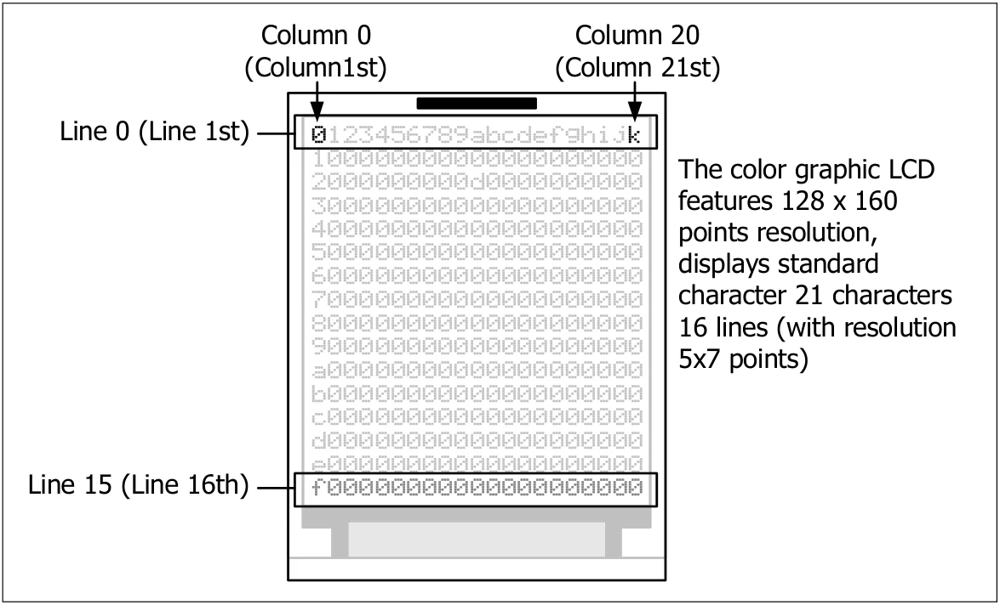

5.2 Library file for GLCD execution
The suitable library file for working with GLCD module of ATX2 controller board will be installed together with Arduino IDE 1.0.7 installation. The library file ATX2_glcd.h is located in folder C:\Arduino\libraries\ATX2 and executed by ATX2.h main library.
This library must be included at the top of the program with the command #include as follows :
#include <ATX2.h>

Original manual, pages 75–76